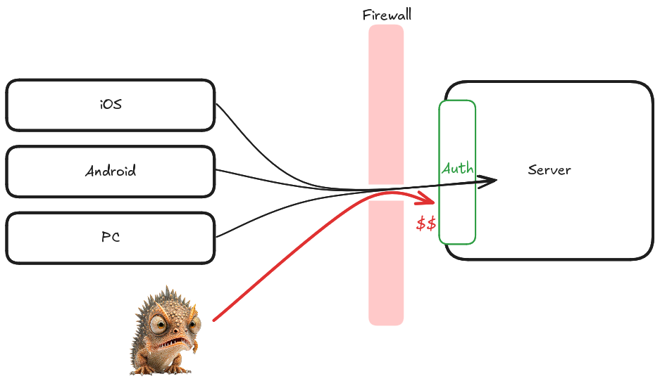
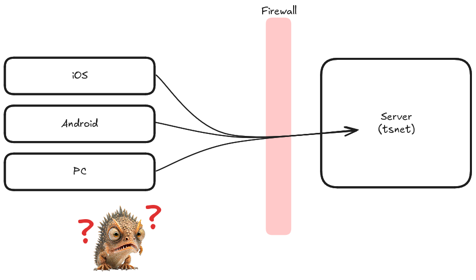

A few years ago I wrote a small webapp for my wife and I to track our expenses. As we make purchases we pull up the website to enter in the transaction details. The data entered then is combined with existing data to show a real-time view of our budgets we can view at any time. I wanted this service available anywhere and chose to host my backend in the cloud. However, this meant that my service was exposed to the entire internet.
Since this is personal and somewhat sensitive data all the endpoints on my service were protected by basic authentication. This served me well enough for years, but then one day I started to notice some strange additions to my cloud bill. I was being billed for data egress to another continent! Now, the amount billed wasn’t very much, but two things bothered me about this situation. First, I couldn’t control the egress amount, and as such my bill could grow at any moment. Second, while the password was sufficiently secure, it had nowhere near the monitoring for unusual activity like you will get with e.g. Gmail or other providers.
Let’s take a moment and theorize what this ingress traffic was. I knew it wasn’t me, because I don’t live on the continent that was receiving the egress data. I took a look at the firewall and confirmed that the only port allowed through was port 443 (for Https traffic). So the data must be exiting through that port. Since all the endpoints require authentication, the only thing I can figure is that someone out there continues to probe various endpoints and receive a whole lot of 403 bits that in total add up to enough for my cloud provider to send a bill.
For a while I had theorized that one way I could solve this was with Tailscale. If the firewall was configured to disallow all incoming connections, usually you’d end up with a pretty useless server that nobody could talk to. However, for Tailscale this topology is often encountered and there are tricks used to make connections work in these situations.
I also thought that I could use this time to change authentication. Tailscale provides a neat little golang library tsnet that allows you to spin up a server directly connected to Tailscale in the same binary. This allows you to ask questions about an individual connection, such as “who is on the other side of this connection?” It also allows you to query the capabilities that user has as they are defined in the Tailscale ACL grants. Using this library I can then authorize everyone with a particular capability to use tailscale and manage exactly which users on my Tailscale get the capability through the ACL. And since the identity provider is now used to confirm identities I no longer need to worry about managing and securing yet another password.
So did it work? Yes! I have now been running the tsnet version of my service for a few months and all the mysterious egress bits have stopped flowing. This is just one of many reasons I will continue to recommend Tailscale!